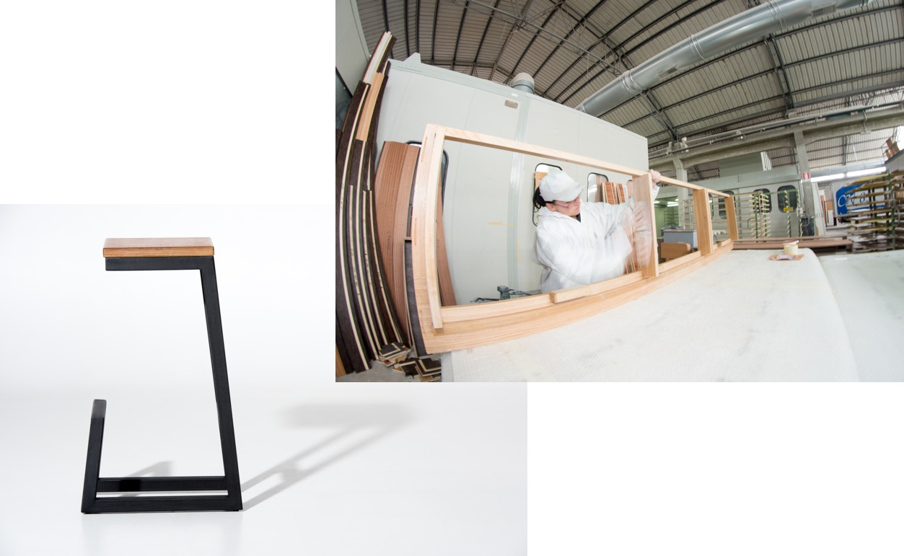
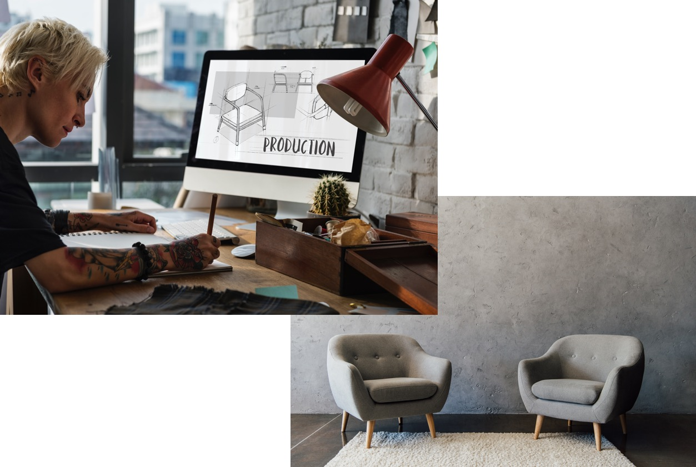
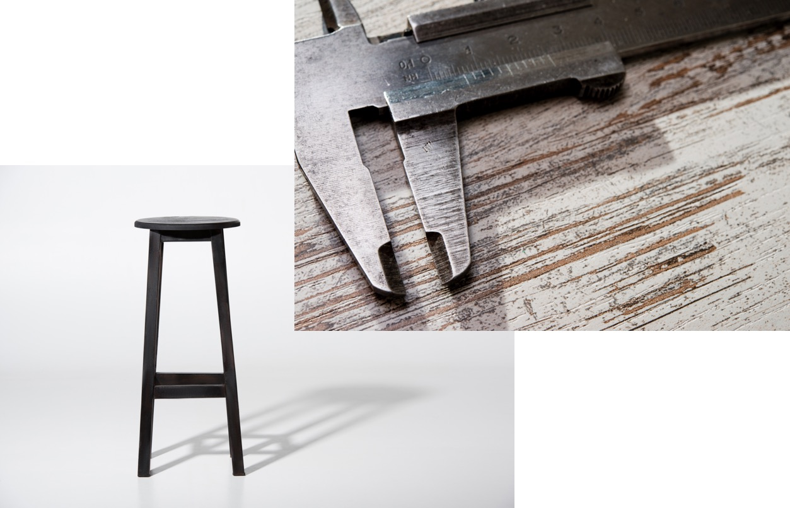

Информация о компании
Компания möbler основана в 2015 году в России. Миссия компании напрямую связана с концепцией разумного потребления, которой мы неуклонно придерживаемся в своей работе.
Дизайн стульев, кресел и столов möbler отличается от мебели российского производства своей минималистичностью, простотой, тщательно выверенной цветовой гаммой. Над этим работает целая команда дизайнеров под руководством шведского арт-директора Отто Смундсена, победителя множества международных выставок промышленного дизайна.
Для производства стульев и кресел möbler используется только натуральная древесина, прошедшая несколько этапов отбора. Все материалы также отбираются на основании высокого качества и долговечности. Это позволяет нам быть уверенными в том, что наша продукция действительно способна удовлетворить запросы современного сознательного потребителя.
